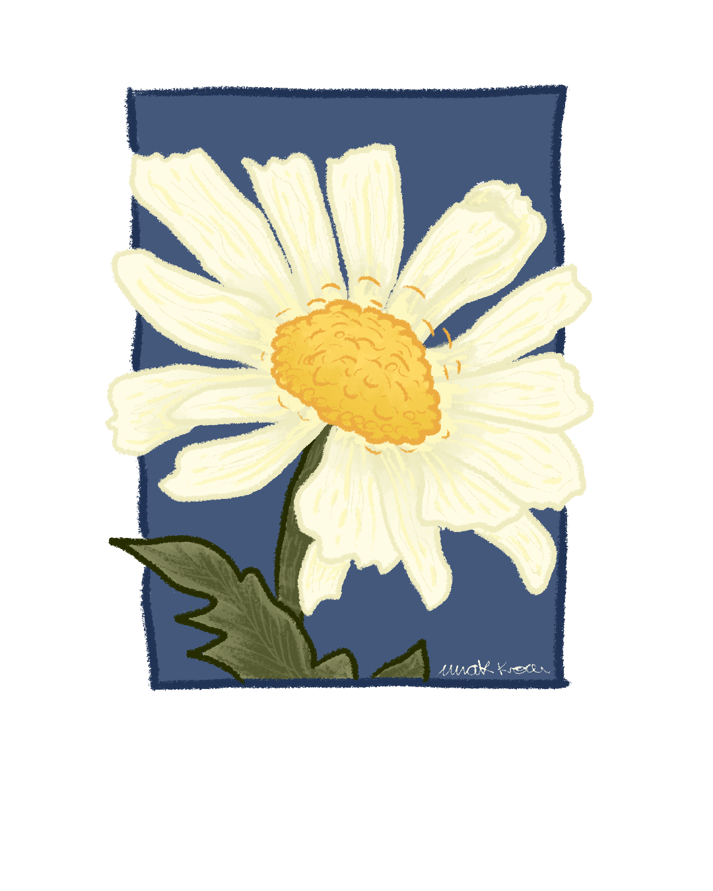
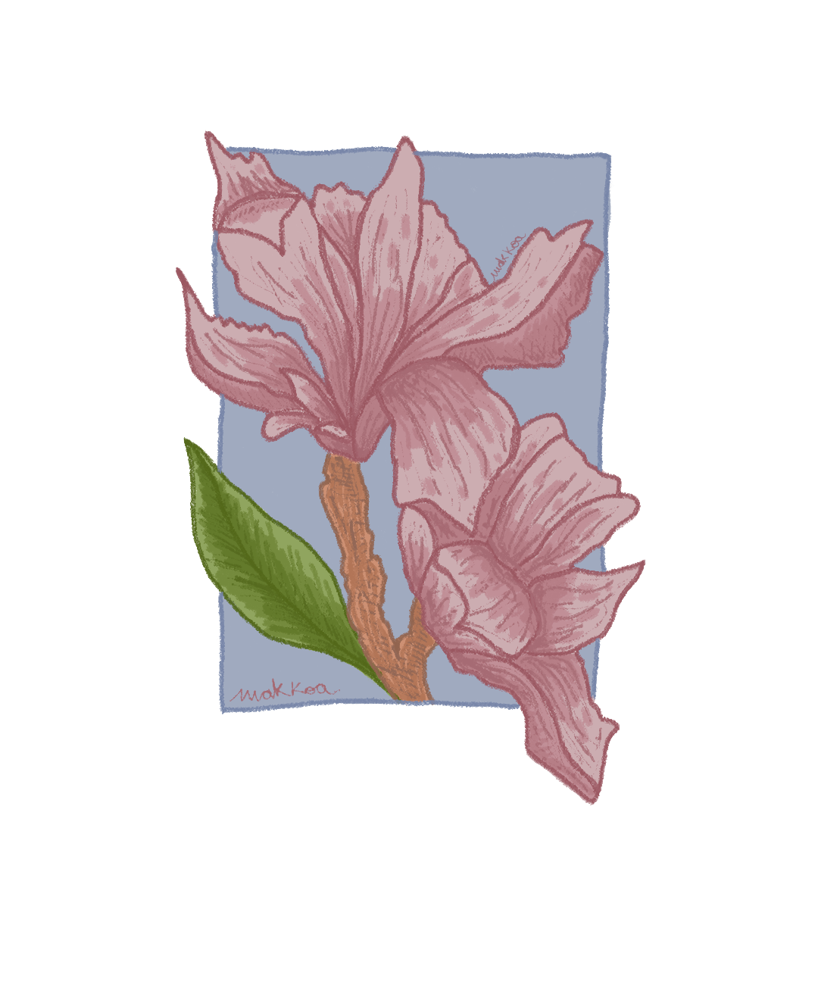

Este challenge nació como una forma de explorar el dibujo desde lo cotidiano. Usando el formato de una polaroid como lienzo, creé pequeñas ilustraciones que capturan momentos, escenas, personajes y detalles simples con un toque personal. Fue un ejercicio creativo para soltar la mano, jugar con estilos, experimentar técnicas y reconectar con lo que más disfruto: dibujar por el simple placer de hacerlo. Cada pieza es una mini historia ilustrada y juntas forman una colección íntima y espontánea del universo Makkoa.
Stickers Ilustrados




Una colección de sticker ilustrados que acompañan el universo de Makkoa. Diseñados para regalar, decorar y compartir creatividad.